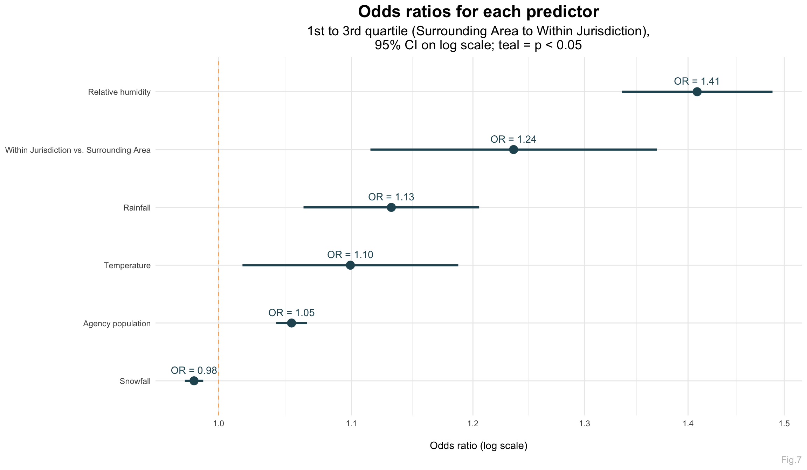
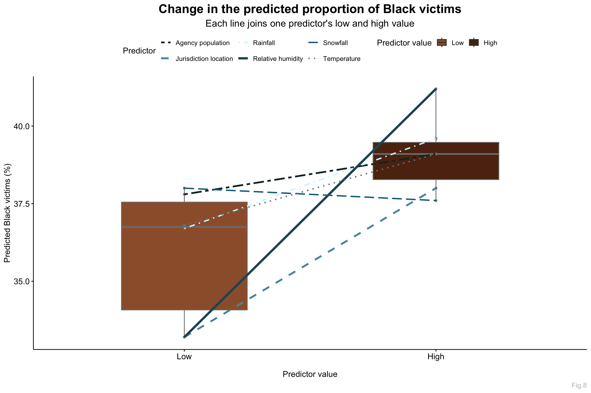

# Load libraries.
#== packages ==
library(gt)
library(here)
library(dplyr)
library(ggplot2)
library(ggpubr)
library(pROC)
library(tidymodels)
library(sessioninfo)Model Data Build: Rough & Full Model
Logistic Regression Modeling
Now, I’ll load the packages and the helper utils.R script.
Split the data
Before the full model is built, the records are split into a training set (11,824 of the records) for building the model and a testing set (the remaining 3,942) for checking how it does on records it hasn’t seen. The split keeps the share of Black victims about the same in both sets.
# Split the modeling data into training and testing sets.
#== set the seed ==
set.seed(2026)
#== reproducible split ==
homicide_split <- homicide_modeling_df %>%
# (Prabhakaran, 2026g; Datanovia, 2026a; Dhana, 2026)
initial_split(
prop = 3 / 4,
strata = victim_racial_construct
)
#== train/test split data ==
homicide_train <- homicide_split %>%
# (Datanovia, 2026a; Dhana, 2026)
training()
homicide_test <- homicide_split %>%
# (Datanovia, 2026a; Dhana, 2026)
testing()
#== call the total rows function ==
# (Buck, 2025)
total_rows(
`Training n()` = homicide_train,
`Testing n()` = homicide_test
)Total row counts for each object are: Training n() Testing n()
11824 3942 #== display outcome mix ==
homicide_train %>%
count(
victim_racial_construct
) %>%
mutate(
prop = n / sum(n)
) %>%
# (Muldoon, 2021)
gt() %>%
tab_header(
title = md("**Training Model Outcome**"),
subtitle = md("*totals and proportions*")
)| Training Model Outcome | ||
|---|---|---|
| totals and proportions | ||
| victim_racial_construct | n | prop |
| Not Black | 7605 | 0.6431834 |
| Black | 4219 | 0.3568166 |
homicide_test %>%
count(
victim_racial_construct
) %>%
mutate(
prop = n / sum(n)
) %>%
# (Muldoon, 2021)
gt() %>%
tab_header(
title = md("**Testing Model Outcome**"),
subtitle = md("*totals and proportions*")
)| Testing Model Outcome | ||
|---|---|---|
| totals and proportions | ||
| victim_racial_construct | n | prop |
| Not Black | 2535 | 0.6430746 |
| Black | 1407 | 0.3569254 |
As you can see, both sets have nearly the same mix: 0.64318 Not Black and 0.35682 Black in the training set, and 0.64307 Not Black and 0.35693 Black in the testing set, close to the full dataset. The model will be built on the training set only, and the testing set stays untouched until the model is evaluated.
Build the full model
The recipe lists the outcome and the six predictors. It fills the missing agency population values with the median from the training set, and turns jurisdiction location into a 0/1 column the model can read.
# Specify the preprocessing steps, and set up the outcome and the six predictors.
#== build the recipe ==
# (Dhana, 2026; Datanovia, 2026a)
homicide_recipe <- recipes::recipe(
victim_racial_construct ~
temp_2m_avg +
relative_humidity_2m_avg +
rain_sum +
snowfall_sum +
agency_population +
jurisdiction_match,
data = homicide_train
) %>%
#== learn the median ==
# (Dhana, 2026)
recipes::step_impute_median(
agency_population
) %>%
#== encode factors ==
# (Dhana, 2026)
recipes::step_dummy(
recipes::all_nominal_predictors()
)
#== display recipe ==
homicide_recipe── Recipe ──────────────────────────────────────────────────────────────────────── Inputs Number of variables by roleoutcome: 1
predictor: 6── Operations • Median imputation for: agency_population• Dummy variables from: recipes::all_nominal_predictors()The recipe and the logistic regression are bundled into one workflow and fit on the training set, so the same steps will be applied when the model is checked on the testing set.
# Fit the full logistic regression on the training set.
#== bundle steps ==
# (Datanovia, 2026a; Dhana, 2026)
full_fit <- workflows::workflow() %>%
#== glue the recipe ==
workflows::add_recipe(
homicide_recipe
) %>%
#== glue the model ==
workflows::add_model(
# (Dhana, 2026; Prabhakaran, 2026f)
logistic_reg() %>%
set_engine(
"glm"
)
) %>%
# (Dhana, 2026)
parsnip::fit(
data = homicide_train
)
#== coefficient table + p-values ==
full_fit %>%
# (Dhana, 2026; Datanovia, 2026a)
broom::tidy() %>%
# (Andrzej, 2020)
mutate_if(
is.numeric,
round,
5
) %>%
as.data.frame() %>%
# (Muldoon, 2021)
gt() %>%
tab_header(
title = md("**Full Model: Coefficient + Z-value + P-value**"),
subtitle = md("*full predictor table*")
)| Full Model: Coefficient + Z-value + P-value | ||||
|---|---|---|---|---|
| full predictor table | ||||
| term | estimate | std.error | statistic | p.value |
| (Intercept) | -2.97139 | 0.17804 | -16.68908 | 0.00000 |
| temp_2m_avg | 0.00356 | 0.00149 | 2.39508 | 0.01662 |
| relative_humidity_2m_avg | 0.02762 | 0.00222 | 12.45127 | 0.00000 |
| rain_sum | 0.03637 | 0.00943 | 3.85590 | 0.00012 |
| snowfall_sum | -0.03183 | 0.00610 | -5.21568 | 0.00000 |
| agency_population | 0.00003 | 0.00000 | 9.28483 | 0.00000 |
| jurisdiction_match_Within.Jurisdiction | 0.21147 | 0.05235 | 4.03949 | 0.00005 |
#== convergence check ==
# (Prabhakaran, 2026f)
workflowsets::extract_fit_engine(
full_fit
)$converged[1] TRUEThe full model converged (TRUE). Five predictors have positive estimates: temperature, humidity, rain, agency population, and Within Jurisdiction. Higher values for these predictors are associated with a greater chance that the victim is Black. Records from Within Jurisdiction are also more likely to involve a Black victim than records from the Surrounding Area. Snowfall has a negative estimate. All six predictors have p-values below .05. The model’s performance on the testing set is discussed next.
Now it’s time to score the predictions against the benchmarks set before testing, an accuracy above the 64.3% always Not Black baseline and a ROC AUC above 0.5, along with sensitivity, specificity, and the J-index to show how well each outcome level is identified.
# Score the testing-set predictions with different performance metrics.
#== bundle metrics ==
# (Twomey, 2026)
homicide_metrics <- metric_set(
roc_auc,
accuracy,
yardstick::sensitivity,
yardstick::specificity,
j_index
)
#== calculate metrics ==
test_results %>%
homicide_metrics(
# (Twomey, 2026)
truth = victim_racial_construct,
estimate = .pred_class,
.pred_Black,
event_level = "second"
) %>%
# (Muldoon, 2021)
gt() %>%
tab_header(
title = md("**Predictions Performance Metrics**"),
subtitle = md("*before testing*")
)| Predictions Performance Metrics | ||
|---|---|---|
| before testing | ||
| .metric | .estimator | .estimate |
| accuracy | binary | 0.63977676 |
| sensitivity | binary | 0.09239517 |
| specificity | binary | 0.94358974 |
| j_index | binary | 0.03598491 |
| roc_auc | binary | 0.64747606 |
The model’s accuracy is 0.63978, which is below the 0.64307 baseline, and its ROC AUC is 0.64748, which is above 0.5. Sensitivity is 0.092395, specificity is 0.94359, and the J-index is 0.035985, so the model correctly labels most Not Black victims but identifies few Black victims. Because both benchmarks had to be met, the model does not meet the success criterion.
Next, since the numeric predictors don’t have groups, I’ll build two hypothetical records for each one that differ only in that predictor, one at its 1st quartile and one at its 3rd quartile. The other numeric predictors stay at their medians, and jurisdiction location is set to Within Jurisdiction, the group with most of the records. Then I’ll predict the proportion of Black victims for each record and compare each predictor’s change with the 5.5-point difference.
# Predict the proportion of Black victims as each numeric predictor rises from the first to third quartile.
#== records of predictor change ==
quartile_points <- bind_rows(
# (Posit team, n.d.)
expand.grid(
changed = "temp_2m_avg",
temp_2m_avg = c(
46.506,
73.023
),
relative_humidity_2m_avg = 70.233,
rain_sum = 2.839,
snowfall_sum = 0,
agency_population = 393,
jurisdiction_match = "Within Jurisdiction"
),
# (Posit team, n.d.)
expand.grid(
changed = "relative_humidity_2m_avg",
temp_2m_avg = 60.887,
relative_humidity_2m_avg = c(
62.548,
74.968
),
rain_sum = 2.839,
snowfall_sum = 0,
agency_population = 393,
jurisdiction_match = "Within Jurisdiction"
),
# (Posit team, n.d.)
expand.grid(
changed = "rain_sum",
temp_2m_avg = 60.887,
relative_humidity_2m_avg = 70.233,
rain_sum = c(
1.213,
4.6185
),
snowfall_sum = 0,
agency_population = 393,
jurisdiction_match = "Within Jurisdiction"
),
# (Posit team, n.d.)
expand.grid(
changed = "snowfall_sum",
temp_2m_avg = 60.887,
relative_humidity_2m_avg = 70.233,
rain_sum = 2.839,
snowfall_sum = c(
0,
0.55125
),
agency_population = 393,
jurisdiction_match = "Within Jurisdiction"
),
# (Posit team, n.d.)
expand.grid(
changed = "agency_population",
temp_2m_avg = 60.887,
relative_humidity_2m_avg = 70.233,
rain_sum = 2.839,
snowfall_sum = 0,
agency_population = c(
99,
1760
),
jurisdiction_match = "Within Jurisdiction"
)
)
#== predicted proportions ==
quartile_predictions <- full_fit %>%
# (Dhana, 2026)
augment(
new_data = quartile_points
) %>%
select(
changed,
.pred_Black
) %>%
mutate(
percent_black = round(
100 * .pred_Black,
1
),
# (Datanovia, 2026b)
group = rep(
c(
"Low",
"High"
),
times = 5
)
)
#== display table ==
quartile_predictions %>%
# (Muldoon, 2021)
gt() %>%
tab_header(
title = md("**Predictor Proportion Change Table**"),
subtitle = md("*within jurisdiction only*")
)| Predictor Proportion Change Table | |||
|---|---|---|---|
| within jurisdiction only | |||
| changed | .pred_Black | percent_black | group |
| temp_2m_avg | 0.3684744 | 36.8 | Low |
| temp_2m_avg | 0.3907231 | 39.1 | High |
| relative_humidity_2m_avg | 0.3318622 | 33.2 | Low |
| relative_humidity_2m_avg | 0.4117482 | 41.2 | High |
| rain_sum | 0.3666397 | 36.7 | Low |
| rain_sum | 0.3958474 | 39.6 | High |
| snowfall_sum | 0.3804779 | 38.0 | Low |
| snowfall_sum | 0.3763503 | 37.6 | High |
| agency_population | 0.3782963 | 37.8 | Low |
| agency_population | 0.3906838 | 39.1 | High |
Moving each numeric predictor from its 1st to its 3rd quartile changes the predicted proportion of Black victims by about 2.2 percentage points for temperature, 8.0 for humidity, 2.9 for rainfall, -0.4 for snowfall, and 1.2 for agency population. Only humidity changes the proportion by more than the 5.5-point difference, so humidity is the only predictor large enough to count as practically significant by this cutoff, while the others are statistically significant but fall below it.
Model visuals
Odds Ratios
Then, I’ll plot each predictor’s odds ratio with its 95% confidence interval as a forest plot. Because the numeric predictors are measured in different units, such as one person, one degree, or one inch, I’ll scale each numeric predictor’s odds ratio and confidence interval to its quartile range, the change from its 1st to its 3rd quartile (pakalla, 2020; Noah, 2020), so every odds ratio describes the same low-to-high change used in the practical-significance check. Jurisdiction location stays as is, comparing Within Jurisdiction with Surrounding Area.
# Plot the odds ratio.
#== forest plot ==
# (Masum, 2026b)
odds_ratio_plot <- ggplot(
odds_ratio_table,
aes(
x = estimate,
y = reorder(term, estimate),
color = significant
)
) +
geom_vline(
xintercept = 1,
linetype = "dashed",
color = "#FFB060"
) +
# (Masum, 2026c)
geom_pointrange(
aes(
xmin = conf.low,
xmax = conf.high
),
size = 0.8,
linewidth = 1.1
) +
# (Masum, 2026d)
geom_text(
aes(
label = sprintf("OR = %.2f", estimate)
),
vjust = -1,
size = 3.8,
show.legend = FALSE
) +
# (Masum, 2026d)
scale_color_manual(
values = c(
"TRUE" = "#275561",
"FALSE" = "grey60"
),
guide = "none"
) +
# (Masum, 2026d)
scale_x_log10() +
labs(
x = "Odds ratio (log scale)",
y = NULL,
title = "Odds ratios for each predictor",
subtitle = "1st to 3rd quartile (Surrounding Area to Within Jurisdiction),\n95% CI on log scale; teal = p < 0.05",
caption = "Fig.7"
) +
theme_minimal() +
ggplot_theme
#== display figure 7 ==
odds_ratio_plot
#== save figure ==
ggsave(
# (Olumide, 2025)
filename = here::here(
"output",
"figures",
"fig_7.png"
),
plot = odds_ratio_plot,
width = 12,
height = 7
)Scaled to each predictor’s quartile range, all six 95% confidence intervals exclude 1, indicating that every predictor is statistically significant at an alpha of .05, consistent with the p-values in the odds-ratios chunk. Relative humidity has the largest odds ratio: 1.409 (1.335 to 1.487) for a 12.419-point increase. Snowfall is the only predictor with an odds ratio below 1: 0.983 (0.976 to 0.989) for a 0.551-inch increase. The jurisdiction location interval (1.115 to 1.369) differs from the interval in the odds-ratios table by less than 0.001. The predictors rank in the same order as the practical-significance changes, with humidity showing the largest increase and snowfall the only decrease.
Predicted Proportions
Finally, I’ll show the practical-significance results in a paired plot. For each predictor, a line connects the predicted proportion of Black victims at its low value (1st quartile, or Surrounding Area for jurisdiction location) to the predicted proportion at its high value (3rd quartile, or Within Jurisdiction). The steeper the line, the greater the change in the expected proportion associated with that predictor.
# Plot each predictor's predicted proportion of Black victims from low to high.
#== paired plot ==
# (Datanovia, 2026b; stefan, 2022)
practical_plot <- ggpubr::ggpaired(
practical_long,
x = "group",
y = "percent_black",
# (Hervé, 2017)
id = "id",
order = c(
"Low",
"High"
),
fill = "group",
color = "group",
palette = c(
"Low" = "#9d5e38",
"High" = "#5e2e11"
),
# (L Tyrone, 2024)
line.color = NA,
# (Datanovia, 2026b; stefan, 2022)
xlab = "Predictor value",
ylab = "Predicted Black victims (%)"
) +
# (stefan, 2022; russhh, 2017)
geom_line(
aes(
group = id,
color = id,
linetype = id,
linewidth = id
)
) +
# (russhh, 2017)
scale_colour_manual(
values = c(
"Relative humidity" = "#275561",
"Jurisdiction location" = "#5497a8",
"Temperature" = "#70868c",
"Rainfall" = "#cff5ff",
"Snowfall" = "#0e6e87",
"Agency population" = "#10302E"
)
) +
# (Wickham et al., 2026)
scale_linetype_manual(
values = c(
"Relative humidity" = "solid",
"Jurisdiction location" = "dashed",
"Temperature" = "dotted",
"Rainfall" = "dotdash",
"Snowfall" = "longdash",
"Agency population" = "twodash"
)
) +
# (Wickham et al., 2026)
scale_linewidth_manual(
values = c(
"Relative humidity" = 1.6,
"Jurisdiction location" = 1.3,
"Temperature" = 0.95,
"Rainfall" = 0.95,
"Snowfall" = 0.95,
"Agency population" = 1.2
)
) +
labs(
title = "Change in the predicted proportion of Black victims",
subtitle = "Each line joins one predictor's low and high value",
caption = "Fig.8",
fill = "Predictor value",
colour = "Predictor",
linetype = "Predictor",
linewidth = "Predictor"
) +
ggplot_theme
#== display figure 8 ==
practical_plot
#== save figure ==
ggsave(
# (Olumide, 2025)
filename = here::here(
"output",
"figures",
"fig_8.png"
),
plot = practical_plot,
width = 12,
height = 8
)According to this plot, relative humidity has the steepest line, rising from 33.2% at its 1st quartile to 41.2% at its 3rd quartile, the only change larger than the 5.5-point difference. Jurisdiction location rises from 33.2% to 38.0%, and the other numeric predictors change by less, while snowfall’s line is the only one that falls, from 38.0% to 37.6%. So the plot shows the same result as the practical-significance check: humidity is the only predictor whose change is large enough to count as practically significant.
Conclusion
All six predictors are statistically significant, but the full model’s testing-set accuracy (0.63978) fell below the 0.64307 always-“Not Black” baseline even though its ROC AUC (0.64748) was above 0.5, so it does not meet the success criterion. Of the six predictors, only relative humidity changes the predicted proportion of Black victims by more than the 5.5-point difference, making it the only one that is also practically significant.